This section's main goal is to show the perceptron's performance.
Please note that if the number of iteration needed to learn is equals to the limit of max iterations
then some tests won't be correct as the perceptron would need more iterations to learn.
Please don't hesitate to rerun "1.NeuralSystem check numbers learned : ]0;9]"
to be aware of the precision and the speed of this MLP.
1 :
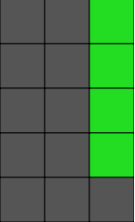
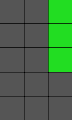
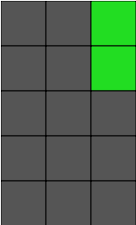
2 :
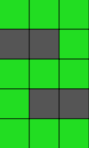
3 :
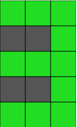
4 :
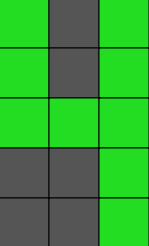
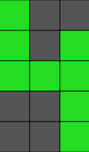
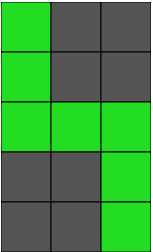
5 :
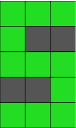
1 :
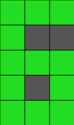
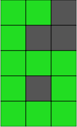
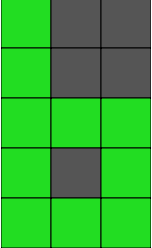
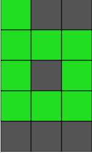
7 :

8 :
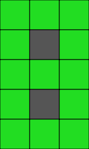
9 :
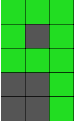
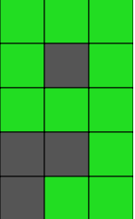
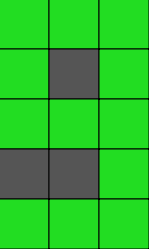
0 :
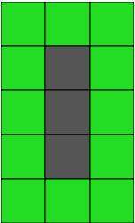
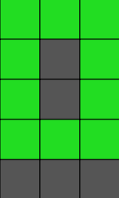
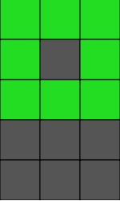
Log Results :